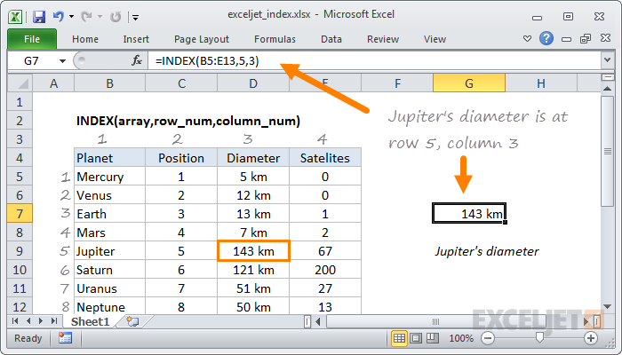
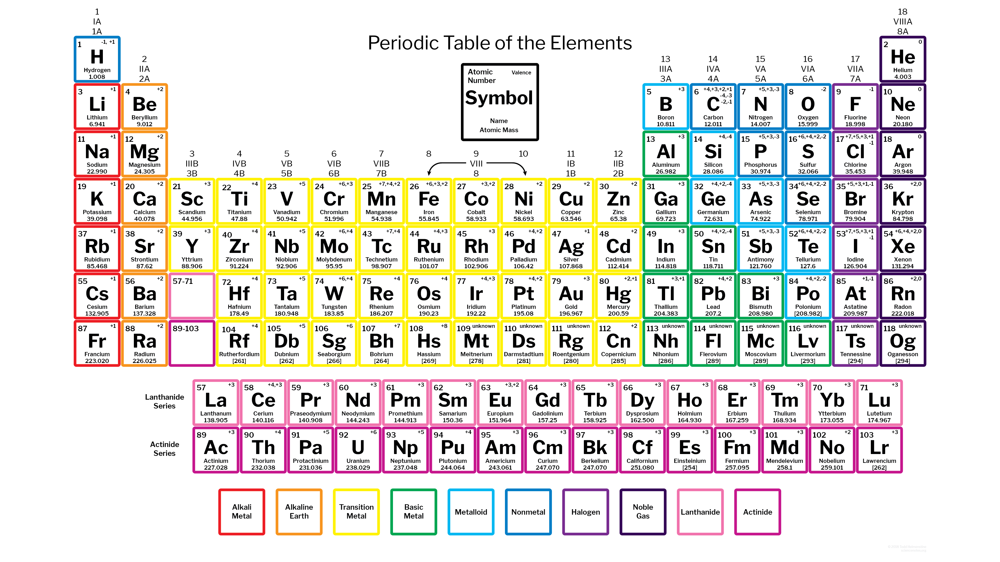

| Name | Surname | Location | Favorite Sauce |
|---|---|---|---|
| Marlon | Ford | Grassy Park | Sweet Chilli |
| Nashville | James | Bellville South | Jimmy |
| Ismet | Samsodien | Ruyterwacht | Mustard |
| Naasik | Kamish | Hanover Park | Tomato |
| Fatima | Hendricks | Valhalla Park | Chutney |
| Liam | Hendricks | Grassy Park | Sweet Chilli |
| Rasool | Booley | Cape Town | Hot Sauce |
| Taylor | Davids | Bridgetown | Chutney |
| Raasikh | Booley | Athone | Mustard |
| Khanyiso | Haman | Delft | Barbeque |
| Nathier | Maniel | Lost City | Tomato |
| Justin | Creighton | Cape Town | Mustard |
| Keanan | Erasmus | Cape Town | Sweet Chilli |
| Tabile | Khume | Khayelitsha | Barbeque |
| Ebraheem | Seale | Bonteheuwel | Perinase |
| Marlon | Ford | Grassy Park | Sweet Chilli |
| Elizabeth | Pollard | Claremont | Tomato |
| Imraan | Meyer | Grassy Park | Perinase |
| Nur | Brock | Kensington | Tomato |
| Marco | Pausle | Ottery | Chutney |
| Michelle | Fortuin | Sriracha | Brackenfell |
In mathematics, a multiplication table (sometimes, less formally, a times table) is a mathematical table used to define a multiplication operation for an algebraic system.

Microsoft Excel is a spreadsheet developed by Microsoft for Windows, macOS, Android and iOS. It features calculation, graphing tools, pivot tables, and a macro programming language called Visual Basic for Applications.
Microsoft Excel has the basic features of all spreadsheets,[4] using a grid of cells arranged in numbered rows and letter-named columns to organize data manipulations like arithmetic operations. It has a battery of supplied functions to answer statistical, engineering and financial needs. In addition, it can display data as line graphs, histograms and charts, and with a very limited three-dimensional graphical display.
The periodic table, or periodic table of elements, is a tabular arrangement of the chemical elements, ordered by their atomic number, electron configuration, and recurring chemical properties, whose structure shows periodic trends. Generally, within one row (period) the elements are metals to the left, and non-metals to the right, with the elements having similar chemical behaviours placed in the same column. Table rows are commonly called periods and columns are called groups. Six groups have accepted names as well as assigned numbers: for example, group 17 elements are the halogens; and group 18 are the noble gases. Also displayed are four simple rectangular areas or blocks associated with the filling of different atomic orbitals.
A database is an organized collection of data, generally stored and accessed electronically from a computer system. Where databases are more complex they are often developed using formal design and modeling techniques.
The database management system (DBMS) is the software that interacts with end users, applications, the database itself to capture and analyze the data and provides facilities to administer the database. The sum total of the database, the DBMS and the associated applications can be referred to as a "database system". Often the term "database" is also used to loosely refer to any of the DBMS, the database system or an application associated with the database.
Types of databases: